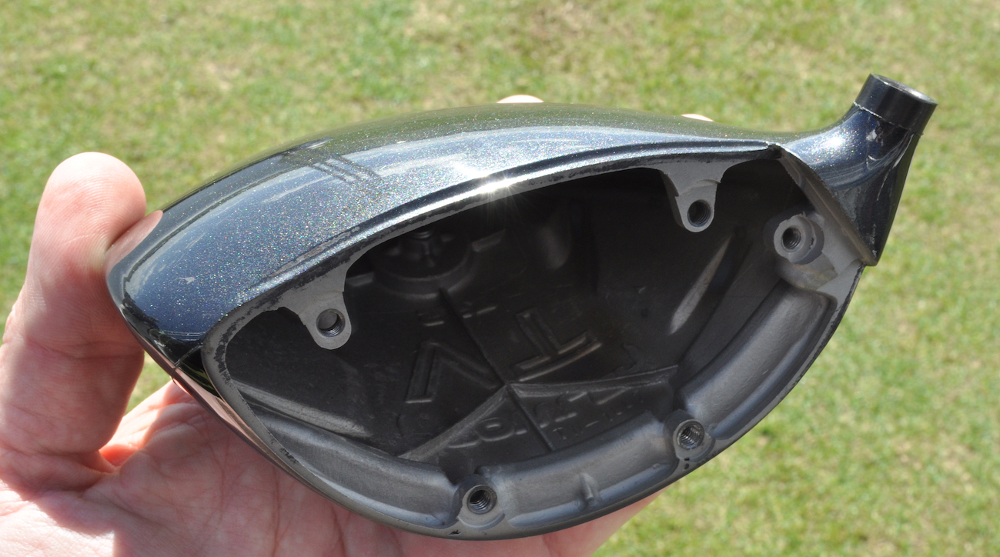
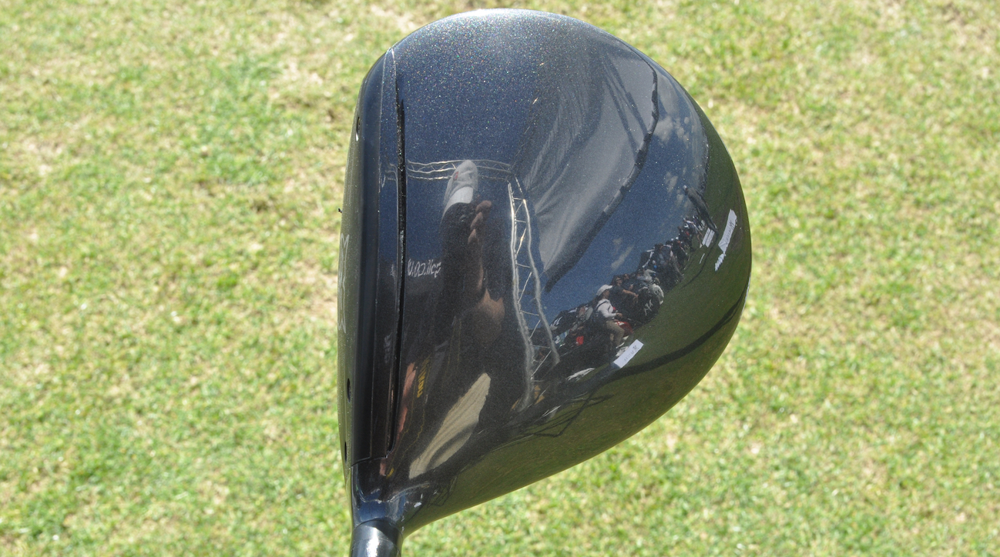

Lynx has aspirations of returning to a place of prominence within in the golf equipment industry. For that to happen, it will need to ride the wave of a groundbreaking piece of technology to generate buzz within the club space. With a number of manufacturers touting ball speed and accuracy with the driver, Lynx chose to take a different route with its Prowler VT, which features an interchangeable faceplate (called "Switch-Face Technology") that can be swapped out to alter true loft without affecting lie angle.
Many of today's adjustable drivers offer multiple forms adjustability with movable weights and loft sleeves that calibrate launch and face angle. While there are benefits to going up or down in loft and altering face angle at the same time, Lynx believes there's a market for players who want to change loft while keeping the face square to the target.
The company currently has five different lofts with a square face, along with varying open and closed settings (2 degrees close, 1-degree close, square, 1-degree open and 2 degrees open) for those who want to reorient face angle as well.
The loft and face angle is denoted on the toe of each faceplate, a request that was made by the R&A when the club was undergoing trials and testing. Due to the face technology being markedly different from other offerings in the marketplace, Lynx co-owner and CEO, Steve Elford, was unsure how the club would be received by the R&A.
"I was quite worried that the R&A might not like [the technology] and would try to ban it, but they absolutely loved it," Elford said. "The great thing is their guys all have design backgrounds, so they love something like this that's new and fresh. We knew early on that we needed something that allowed us to stand out from the crowd. Getting their validation helped."
During initial prototyping, the driver stood out from the crowd for all the wrong reasons.
"The sound was harsh," Elford said. "I mean really harsh. Just not a pleasant sound at impact."
The problem surrounded the integration process between the titanium face and head, which had to be fine-tuned over the years. A polymer ridge was added around the lip connecting the two pieces to dampen sound, but it was a CNC face milling process that rectified the issue and allowed Lynx to bring the driver to market.
As for the visible screws attaching the face to the head, Elford made assurances that they are flush with the plate and won't affect ball flight. The screws also serve another purpose, redistributing discretionary weight once occupied by an adjustable hosel to the perimeter for more forgiveness.
The driver will be available later this summer - most likely June or July - and comes with two faceplates. And if you're the kind of golfer who needs a few more plates at your disposal, they'll be available at $120 a pop.
With a driver now in the pipeline, Elford has his sights set on shaking up the industry, particularly in North America, where the brand once had a major presence at retail and on Tour (Fred Couples and Ernie Els represented the brand in the 1990s).
Since acquiring Lynx UK and European rights 7 years ago, Elford purchased the brand's North American rights a year ago from Dick's Sporting Goods for 2 percent of the price Golfsmith initially quoted him four years prior. When Golfsmith was acquired by Dick's for $70 million at a bankruptcy auction, Elford jumped at the chance to acquire Lynx's rights in the States.
"We think we have a killer product with this driver," he said. "If it had the hosel technology found in many of today's drivers, it would still be a nice product. But that's not what we're going for with this one. I believe this technology can change the world of golf clubs for the better."